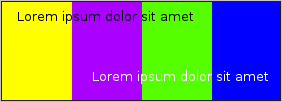

The Color Wheel

The RYB color wheel |
Originally created as a tool to visualize the physical spectrum of all colors by scientists like Isaac Newton, a color wheel (or circle) nowadays is a tool used by artists and designers to select colors based on color perception. Like the RGB and CMY(K) color models, a color wheel is making use of the concept of primary colors, in this case red, yellow and blue, hence the abbreviation RYB. While other color wheels, based on the RGB or CMY(K) models, are available, the Scribus Color Wheel follows the traditional “artistic” or “perceptional” approach, since this is the way to (almost always) guarantee visually pleasing results in design by using mathematical formulas based on Goethe’s and his successors’ observations and research.
|
The Color Wheel Dialog
The Color Wheel dialog (available via Extras > Color Wheel) may look simple at first glance, but it’s actually quite versatile. Note that it’s only available with an open document, as the color harmonies you create in this dialog will be added to a document’s colors.
General
In the upper left part of the dialog you can see the color wheel itself. Depending on the selected color scheme, you will see one or more tiny circles placed at the border of the wheel. These are the color indicators, and you can move them with the mouse to modify the color scheme. At the center of the wheel you can always see one color. This is the base color, i.e., the color that determines the other colors in the scheme. You can change this color either by clicking somewhere in the wheel or by choosing another base color in the section right to wheel.
Underneath the wheel you can select the color scheme, which will be described below. Since the color schemes are based on geometrical ideas, you can also change the angle or the “distance” between colors in some (but not all) of them.
The Preview
The Preview section of the dialog provides a preview of the selected color scheme, as well as sample text in 100% RGB black and RGB white to show how text will look in front of areas that use these colors. One important feature of the preview is the emulation of color blindness (Vision Defect Type). When using color harmonies one should always keep in mind that some color combinations that work well for the majority of people may not work at all for people who are suffering from certain vision defects. For instance, two contrasting colors may look like a single color, or text that can be easily read if placed in front of a colored area may completely disappear for people with certain vision defects.
Color Models
The Color Wheel dialog provides three kinds of color models, as well as a variable color selection, to select the base color. CMYK, RGB and HSV have been described elsewhere. In addition, you can select colors from all document colors, i.e., the currently selected color palette, as well as all imported and newly created colors.
Color Schemes
Monochromatic:
The monochromatic color scheme (as displayed above) is actually a combination of a base color and one dark and light variancy of the color. You cannot change the “angle,” as there is no geometrical relation between the colors.
Analogous: |

Angle = 20

Angle = 30
|
The analogous color scheme creates color harmonies by using neighboring colors in the color wheel. These colors should be pleasing together when the angle is small, and offer increasing contrast as you increase the angle.
In these images, our base color is the farthest to the right. |
Complementary:
|

Base color to the left |
Complementary colors are colors opposite to each other on the Color Wheel, so here we have a fixed angle of 180°. Their best use is for creating strong contrasts between larger areas, but they should not be used together as text and text background colors. |
Split Complementary: |

Angle = 20

Angle = 40
|
The base color is farthest to the right.
This is in essence a combination of Analogous and Complementary. The first two colors (left to right) are analogous to the base color, separated by our chosen angle. The next two colors are complementary to each of these analogous colors. |
Triadic: |

Base color to the right |
Another simple fixed scheme, with the three colors 120° apart. |
Tetradic (Double Complementary) |

Angle = 20

Angle = 40 |
The base color is farthest to the right.
Here we have a single analogous color (second from the left), separated by our chosen angle, then corresponding complementary colors (first and third colors). Note that one complementary color pair is the first and fourth, and the other pair is the second and third. |
Making Use of These Schemes
With so many schemes and variations in settings, obviously there is no automatic answer to choosing which is best for you. One way to learn is to look at advertisements, web pages, or other examples of pleasing design, and pay attention to their color schemes, noting which seem to work well, and which do not. There are good uses for similar colors and for contrasting colors, and most designs have each in various areas of the page.
Adding Color Harmonies to the Document Colors
In the lower right section of the Color Wheel dialog, you can see the “Result Colors” in all three color models. Unfortunately, the names of the colors in the new scheme will be created automatically, and there’s no way to rename them in the Color Wheel dialog. Thus, you will have to rename these colors via Edit > Colors if you either want to use several color harmonies in your document or make sure that the colors of your scheme are listed next to each other in color dialogs.
At the bottom of the dialog you can see two options for adding your color scheme to the document colors: “Merge” and “Replace.”
Merge will add the colors created by you to the document colors. If you have already created another color scheme without having changed the names of this scheme’s colors, the following dialog will show up:
As described, the Colors dialog will be launched, where you can rename the existing scheme colors. You can then return to the Color Wheel and merge the new color harmony.
Replace, not surprisingly, will replace colors from a previously created scheme with identical names in the Color dialog.
Limitations
There are several limitations to both the RYB color model and its implementation in Scribus:
- The RYB color model is incomplete. It ignores neutral colors like black, white or grays, and it doesn’t work reliably with CMYK and spot colors. Some color vendors, like Pantone or RAL, offer specialized software that allows for creating color harmonies with their spot color systems. dtp studio’s “Digital Colour Atlas” even permits the creation of color harmonies between different color systems.
- The Scribus Color Wheel implementation doesn’t provide all possible RYB color harmonies (yet). The Scribus Team is working on a completion.
- You should be aware of the differences between the CMYK and RGB color models, as well as the results of applying certain rendering intents. Unfortunately, there’s no way to escape the laws of nature, and in some cases only experience (and reliably set up color management) will help to avoid a disappointing print result.